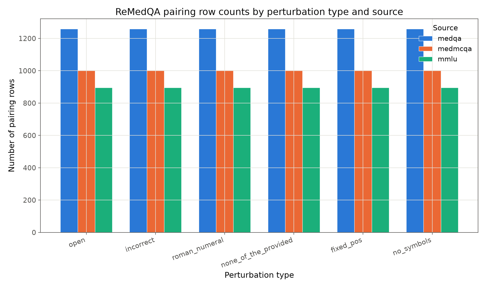
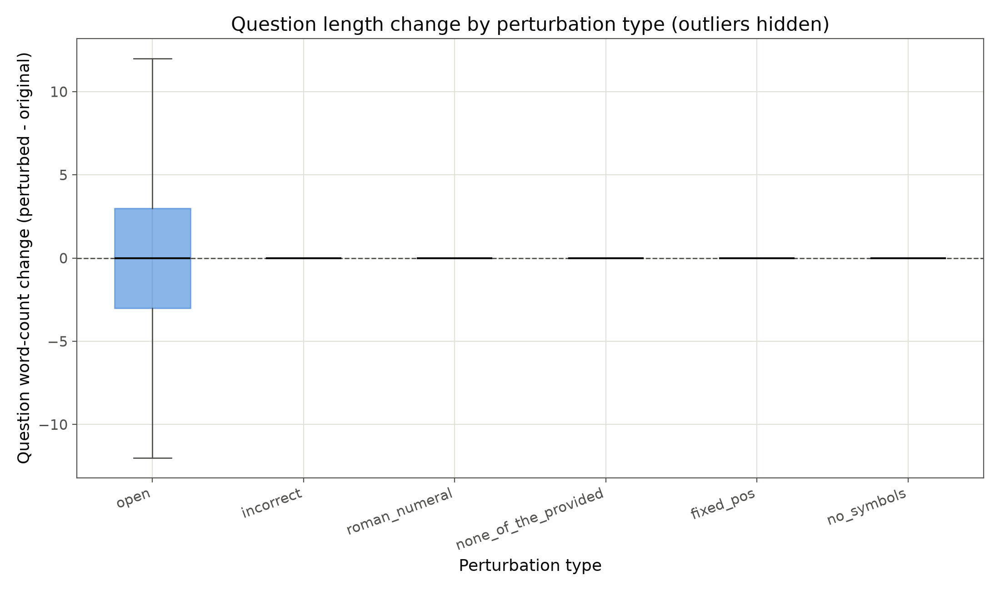
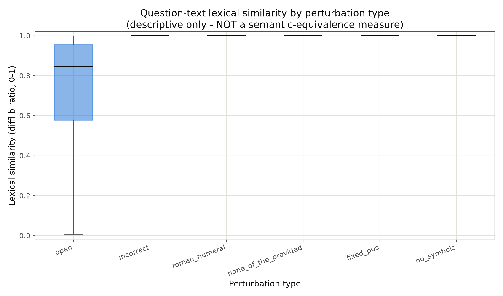
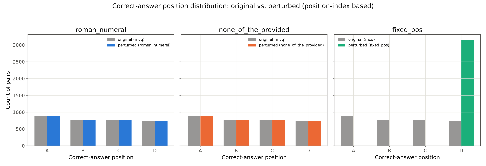

Purely descriptive. Lexical similarity is difflib SequenceMatcher ratio on normalized
question text (0–1), applied identically to every perturbation type — a surface-level string
signal only, not evidence of semantic equivalence. Full table:
results/audit/perturbation_descriptives.csv.
| Perturbation | Question changed | Lexical similarity (median) | Answer-position change rate | Answer format |
|---|---|---|---|---|
| open | 95.1% | 0.845 | n/a | free text (99.9%) |
| incorrect | 0.0% | 1.000 | n/a | list of 3 letters (100%) |
| roman_numeral | 0.0% | 1.000 | 0.0% | roman numeral (100%) |
| none_of_the_provided | 0.0% | 1.000 | 0.0% | letter (100%) |
| fixed_pos | 0.0% | 1.000 | 76.9% | letter (100%) |
| no_symbols | 0.0% | 1.000 | n/a | free text (99.9%) |
fixed_pos always relocates the correct answer to position D. Position-index analysis
(mapping each perturbation's own option-key order back to a canonical A–D slot) shows the perturbed
correct answer lands at D in 100% of 3,154 pairs — a deliberate fixed positional target, not a
random reshuffle. roman_numeral and none_of_the_provided
show a 0% position-change rate, confirming both leave option order untouched as designed.
Four figures generated by scripts/descriptive_analysis.py. Click any figure caption for its interpretation.


open meaningfully moves — median 0, but a wide spread, since some rewordings shorten and others lengthen the question. The other five overlap exactly with the baseline.
open leaves the question string untouched (similarity = 1.0); open spans a wide range, median 0.845 — substantial wording drift even on the higher-similarity end.
fixed_pos's perturbed bars sit entirely on D (100%); roman_numeral and none_of_the_provided mirror the original distribution exactly.
Because roman_numeral leaves option order untouched (0% position change) while
fixed_pos always shuffles the correct answer to D, the two can be compared
directly to estimate a model's pure positional bias. A drop in
fixed_pos accuracy that isn't also present in roman_numeral
cannot be explained by label-letter sensitivity — it must be position sensitivity.
Five of six perturbations have lexical similarity = 1.0 (identical question strings),
but two of those five (incorrect, none_of_the_provided) change the
task semantics fundamentally. Any future embedding-based similarity check must be
supplemented with a structural check on what the question is asking for,
not just how the question text reads.
open is the only perturbation that changes both the task format
(MCQ → free text) and the question text itself, with 95.1% of rows showing a
lexical change and a broad similarity spread. Scoring it requires a free-text judge
(e.g. string-containment of the canonical answer, or an LLM-as-judge) that should be
calibrated and reported separately from the five MCQ-format perturbations.